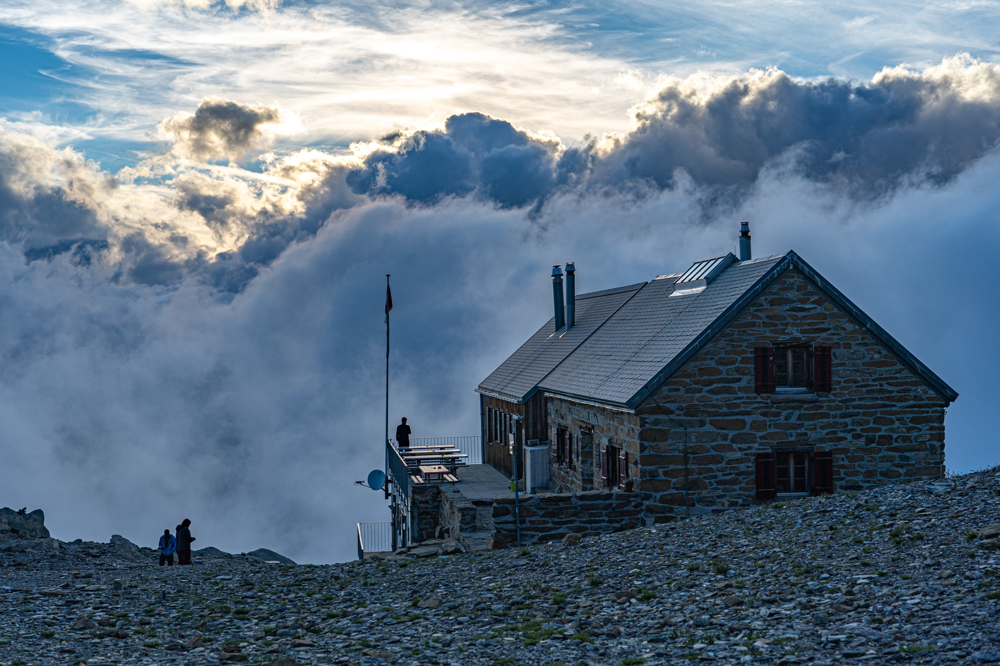

Walking | Travel | Bavaria
The history of Almhütte: German Alpine Huts
October 2020
The history of Almhuette (German Alpine Huts) & Germany's walking tradition.
Introduction
The German Alps in Bavaria are best known as ski-holiday destination: it is cheaper than neighboring countries and is rather close to countries like the Netherlands and Belgium.
But, in the summertime Bavaria is not devoid of tourists either; most of them go on walking tours, ascending the high German Alps.
My personal favorite alpine hut is the Blaueishütte on top of the Hochkalter mountain.
Wanderlust: German walking history
You might know the word 'Wanderlust': it's the German word meaning a strong desire to travel. But, if you take it more literally, it purely means the desire to walk. It's not without reason that the German word has found its way into English language: Germany has one of the richest walking traditions to date.
Already at the time of Martin Luther (1500s) it was becoming more common to travel - and many people did that by walking. For instance, Luther himself once walked from Germany to Rome to see the city for himself.
But, the German walking tradition effectively dates back even further if we consider Christian pilgrimages. They became more popular from the 12th century onwards, and are still carried out.
A German mountain hut
Alpine Huts
The alpine huts slowly gained popularity from the 19th century onwards, when mountain walks became more popular. It was then that the first mountain huts were established. They provided guests with shelter and (sometimes) food after long ascends.
The oldest mountain hut is the Knorr Hut at the Zugspitze. It was established in 1855, and resides on Germany's highest mountain.
Besides the establishment of mountain huts, the mapping and documentation of the German Alps helped foster the arrival of more tourists. The height of mountains, the meandering of roads and the place of resting spots were becoming available for increasingly more locations.
Travel styles
Some 'wanderers' (German for walkers; English for roamer or explorer) go from hut to hut: they try to chain together as many hut sleepovers as they can. Others will simply sleep at huts for one night and then start the descend in the fresh morning. A third category may stay at almhütte for more than one day; some of them entertain themselves with mountaineering on proximate mountain ridges.